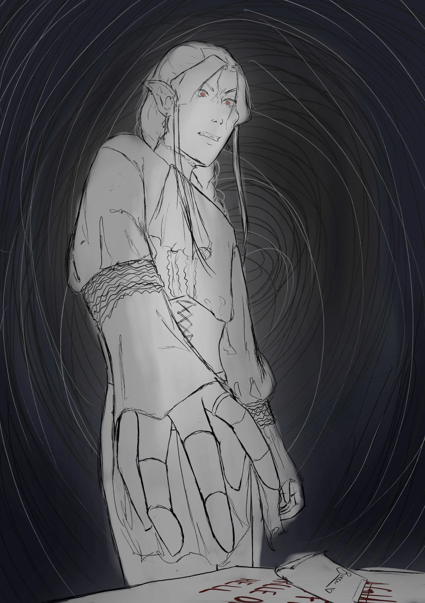

Torin Almeria

Name: Torin Almeria
Age: 210 years old (23 in relation to human years)
Race: High Elf
Pronouns: He/Him
Class: Warlock
Home: Almeria Kingdom
Torin's a sad guy and I've been making him suffer for a majority
of the campaign.
Evil parents, tragic brother, and he's just learning about the
world for the first time so it's rough.
Overview
Torin was raised among very apathetic and emotionally distant
parents and servants. Because of this, he believed that he had
to show himself as a worthy ruler in order to earn their love
and respect. Being raised in isolation meant that books were
often his only friends and he developed an over-the-top persona
based on some villans from his stories.
One day while reading, he encountered the archfey that would soon be his patron, Veras. Veras was intruiged by Torin and decided to bestow some power onto him through a pact, although Torin doesn't know what the stipulations of that pact are...